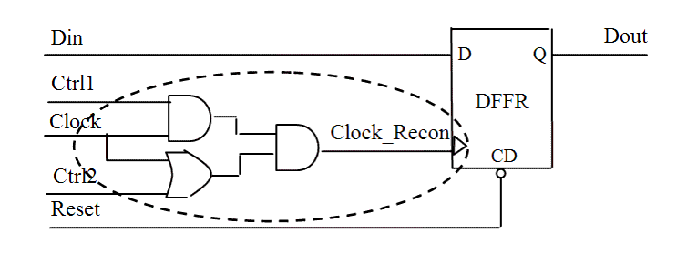

| Description | In most cases, a reconvergent path generates glitches. Having glitches in a clock path is forbidden because they create unpredictable behavior in all cells controlled by that clock.You can configure this rule using rule_set_parameter Tcl commands to set the following parameters:
|
| Policy | DESIGN |
| Ruleset | CLOCKS |
| Language | VHDL/Verilog |
| Type | Hardware |
| Severity | Error |
This is an example of invalid Verilog code, followed by a circuit diagram that illustrates the problem:
module ntl_clk17_top (Clock, Reset, Ctrl1, Ctrl2, Din, Dout); input Clock, Reset, Din, Ctrl1, Ctrl2; output Dout; reg Dout; wire Clock_Recon, Recon_1, Recon_2; assign Recon _1 = Clock & Ctrl1 assign Recon _2 = Clock | Ctrl2; assign Clock_Recon = Recon _1 & Recon _2; // NTL_CLK17 fires -- reconvergent path on clock tree always @(posedge Clock_Recon) begin if (!Reset) Dout <= 0; else Dout <= Din; end endmodule